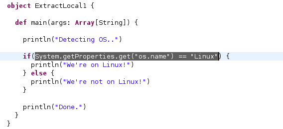
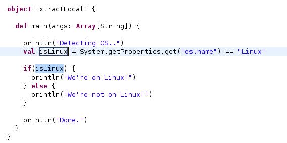

Extract Local allows you to introduce a new local variable from an expression: the value is initialized with the selected expression and the original expression is replaced with a reference to the new value.
The refactoring is also known as Introduce Explaining Variable, because it allows the programmer to simplify long expressions by splitting them into several smaller ones and making the code more readable.
Selecting an expression like in the following screenshot:

and then executing the refactoring creates a new local variable and lets you change the name in Eclipse's linked mode:

Extracting new local values can also be useful for debugging to see the intermediate results of a computation.